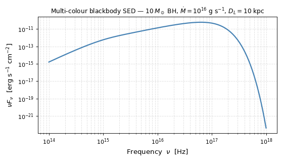

Steady-State Thin Disk#
The steady-state thin-disk models describe the steady-state radial structure of a geometrically thin, optically thick accretion disk in which viscosity is parameterised by the Shakura-Sunyaev \(\alpha\) prescription [1]. Unlike the one-zone models, which integrate the disk evolution in time, these models evaluate the instantaneous disk structure at an arbitrary radius given fixed global parameters \((M_{\rm BH},\,\dot{M},\,R_{\rm in})\).
They are appropriate when:
the disk has reached (or can be approximated as) a steady state,
you need to compute the multi-colour blackbody SED of an optically thick disk,
or you want to check structural scalings (surface density, scale height, etc.) against analytic expectations.
Quick Start#
The most common task is constructing the spectral energy distribution (SED) of a thin disk with given physical parameters. The example below sets up a \(10\,M_\odot\) black hole accreting at \(\dot{M} = 10^{16}\,\mathrm{g\,s^{-1}}\), places it at a distance of 10 kpc, and plots the multi-colour blackbody SED from the far-UV through soft X-rays.
import numpy as np
import matplotlib.pyplot as plt
from astropy import constants as const
from astropy import units as u
from trilobite.dynamics.accretion import AlphaDisk
# ── Physical parameters ───────────────────────────────────────────────────
M_BH = 10 * const.M_sun # black hole mass
mdot = 1e16 * u.g / u.s # mass accretion rate (Eddington-ish for 10 M_sun)
alpha = 0.1 # Shakura-Sunyaev viscosity parameter
# Inner truncation radius: 6 R_g (Schwarzschild ISCO for a non-spinning BH)
R_g = (const.G * M_BH / const.c**2).to(u.cm)
R_in = 6.0 * R_g
# Outer radius: where the disk effectively truncates
R_out = 1e3 * R_in
# Luminosity distance — needed to convert L_nu to F_nu (observed flux density)
D_L = 10 * u.kpc
# ── Instantiate the disk model ────────────────────────────────────────────
# AlphaDisk implements the SS73 / FKR analytical scalings.
# The alpha parameter is the only model-level constant; physical parameters
# (M_BH, mdot, R_in) are passed at evaluation time.
disk = AlphaDisk(alpha=alpha)
# ── Frequency grid — far-UV through soft X-ray ───────────────────────────
# 500 log-spaced points from 1e13 Hz (~12000 Angstrom, NIR) to 1e18 Hz (~4 keV)
nu = np.geomspace(1e14, 1e18, 500) * u.Hz
# ── Compute the multi-colour blackbody SED ────────────────────────────────
# compute_sed integrates the Planck function B_nu(T_eff(r)) over all annuli.
# Setting D_L causes the returned dict to include both L_nu and F_nu.
sed = disk.compute_sed(
nu,
M_BH,
mdot,
R_in,
R_out=R_out,
D_L=D_L,
cos_theta=1.0, # face-on inclination (maximises observed flux)
N_r=500, # number of radial quadrature points
)
# sed["L_nu"] -- spectral luminosity [erg/s/Hz], always returned
# sed["F_nu"] -- flux density [erg/s/Hz/cm^2], returned when D_L is set
nu_F_nu = (nu * sed["F_nu"]).to(u.erg / u.s / u.cm**2)
# ── Plot: nu * F_nu vs nu (standard SED presentation) ────────────────────
fig, ax = plt.subplots(figsize=(7, 4))
ax.loglog(nu.value, nu_F_nu.value, color="steelblue", lw=2)
ax.set_xlabel(r"Frequency $\nu$ [Hz]", fontsize=12)
ax.set_ylabel(r"$\nu F_\nu$ [erg s$^{-1}$ cm$^{-2}$]", fontsize=12)
ax.set_title(
r"Multi-colour blackbody SED — "
r"$10\,M_\odot$ BH, $\dot{M}=10^{16}$ g s$^{-1}$, $D_L=10$ kpc",
fontsize=11,
)
ax.grid(True, which="both", ls="--", alpha=0.4)
plt.tight_layout()
(Source code, png, hires.png, pdf)
{kind=link}
{kind=link}

The Thin Disk Solution#
The analytical solution implemented here was derived by Shakura and Sunyaev[1] in the seminal paper that introduced the \(\alpha\)-viscosity prescription, and is presented in the textbook form used throughout this module by Frank et al.[2] (hereafter FKR). The solution follows from the steady-state mass and angular momentum conservation equations combined with the \(\alpha\)-viscosity relation \(\nu = \alpha c_s H\), a Keplerian rotation profile, and a zero-torque inner boundary condition at \(R_{\rm in}\).
The scalings implemented in AlphaDisk
correspond to the gas-pressure-dominated, Kramers-opacity (zone C) regime
of Frank et al.[2] Eq. 5.49. In this regime the midplane
temperature is low enough that radiation pressure is negligible and the dominant
opacity source is bound-free/free-free (Kramers) absorption rather than electron
scattering. The resulting analytical scalings are:
where \(\dot{M}_{16} \equiv \dot{M}/10^{16}\ \mathrm{g\,s^{-1}}\), \(M_1 \equiv M_{\rm BH}/M_\odot\), \(R_{10} \equiv R/10^{10}\ \mathrm{cm}\), and the inner-boundary correction factor satisfies
The factor \(f \to 0\) at \(R \to R_{\rm in}\) (enforcing the zero-torque inner boundary condition) and \(f \to 1\) at \(R \gg R_{\rm in}\), recovering the asymptotic power-law scalings.
Usage Guide#
This section walks through the full workflow for working with
AlphaDisk — from construction through
unit handling to SED computation. All public methods accept both plain floats
(assumed CGS) and Quantity objects, so you can mix-and-match
as is most convenient.
Instantiating the Model#
AlphaDisk takes a single model-level
parameter: the Shakura-Sunyaev viscosity \(\alpha\). Physical disk parameters
(\(M_{\rm BH}\), \(\dot{M}\), \(R_{\rm in}\)) are not stored on the
object; they are passed at evaluation time. This makes the same disk instance
reusable across parameter surveys without re-instantiation.
from trilobite.dynamics.accretion import AlphaDisk
disk = AlphaDisk(alpha=0.1) # 0 < alpha <= 1
Computing the Disk Structure#
Call compute() (or equivalently
disk(radius, M_BH, mdot, R_in)) to evaluate the full set of structural
variables at one or more radii:
import numpy as np
from astropy import constants as const
from astropy import units as u
M_BH = 10 * const.M_sun
mdot = 1e16 * u.g / u.s
R_g = (const.G * M_BH / const.c**2).to(u.cm)
R_in = 6.0 * R_g
# Evaluate on a log-spaced radial grid from just outside R_in to 10^4 R_in
R = np.geomspace(1.01, 1e4, 300) * R_in
result = disk.compute(R, M_BH, mdot, R_in)
The return value is a plain Python dict whose values are
Quantity arrays with appropriate CGS units attached.
Key |
Description |
Units |
|---|---|---|
|
Surface density \(\Sigma\) |
\(\mathrm{g\,cm^{-2}}\) |
|
Midplane temperature \(T_c\) |
K |
|
Pressure scale height \(H\) |
cm |
|
Midplane mass density \(\rho = \Sigma / (2H)\) |
\(\mathrm{g\,cm^{-3}}\) |
|
Vertical optical depth \(\tau\) |
dimensionless |
|
Kinematic viscosity \(\nu = \alpha c_s H\) |
\(\mathrm{cm^2\,s^{-1}}\) |
|
Radial drift velocity \(v_R\) |
\(\mathrm{cm\,s^{-1}}\) |
Handling Units#
All public methods use ensure_in_units()
internally to convert inputs to CGS before computation. This means you can pass
parameters in any consistent unit system and the conversion happens transparently:
# All three of these are equivalent
result1 = disk.compute(R, 10 * const.M_sun, 1e16 * u.g / u.s, R_in)
result2 = disk.compute(R, 10 * const.M_sun, 1e19 * u.kg / u.s, R_in)
result3 = disk.compute(R.to(u.km), 10 * const.M_sun, 1e16 * u.g / u.s, R_in)
Outputs are always returned as Quantity objects, so you
can convert to preferred units with standard astropy machinery:
print(result["Sigma"].to(u.kg / u.m**2)) # surface density in SI
print(result["T_c"].to(u.eV, equivalencies=u.temperature_energy()))
If you pass raw floats (no units attached), they are assumed to be in CGS:
# Radius in cm, mass in g, mdot in g/s, R_in in cm -- all CGS
result_cgs = disk.compute(1e10, 2e34, 1e16, 3e6)
The Effective Temperature Profile#
compute_effective_temperature()
returns \(T_{\rm eff}(r)\) from the first-principles viscous dissipation
formula — independently of the zone-C structural scalings. This is the temperature
that governs the emitted spectrum from each annulus and the one that enters the SED
computation:
Note that \(T_c \neq T_{\rm eff}\). The midplane temperature \(T_c\)
returned by compute() is hotter
because photons must diffuse vertically through the disk; the two are related by
\(T_c = \bigl(\tfrac{3\tau}{4}\bigr)^{1/4} T_{\rm eff}\).
T_eff = disk.compute_effective_temperature(R, M_BH, mdot, R_in)
print(T_eff) # Quantity in K, same shape as R
Computing the SED#
compute_sed() integrates the
Planck function over all annuli to produce the multi-colour blackbody spectrum.
The radial integral is evaluated on a log-spaced grid using the trapezoidal rule.
At minimum you must supply a frequency grid, the three physical disk parameters,
and an outer radius:
nu = np.geomspace(1e13, 1e18, 500) * u.Hz
sed = disk.compute_sed(
nu, M_BH, mdot, R_in,
R_out=1e4 * R_in, # outer truncation radius
)
L_nu = sed["L_nu"] # spectral luminosity [erg/s/Hz], always present
To obtain the observed flux density at a known source distance, pass the luminosity
distance D_L. You may also specify the inclination via cos_theta
(default 1.0 = face-on):
sed = disk.compute_sed(
nu, M_BH, mdot, R_in,
R_out=1e4 * R_in,
D_L=10 * u.kpc, # luminosity distance -- activates F_nu output
cos_theta=0.5, # 60 degree inclination from the disk normal
N_r=500, # radial quadrature points (default)
)
L_nu = sed["L_nu"] # [erg/s/Hz]
F_nu = sed["F_nu"] # [erg/s/Hz/cm^2], only present when D_L is given
Bolometric Luminosity#
For a quick analytic estimate of the total radiated power — without evaluating the
full SED integral — use
compute_bolometric_luminosity().
This returns the exact result of integrating the viscous dissipation profile over
both disk faces to \(R_{\rm out} \to \infty\):
L_bol = disk.compute_bolometric_luminosity(M_BH, mdot, R_in)
print(L_bol.to(u.erg / u.s))
Relation to One-Zone Models#
The thin-disk models and the one-zone models are complementary:
Thin disk ( |
One-zone ( |
|
|---|---|---|
Time dependence |
Steady state (snapshot at fixed \(\dot{M}\)) |
Time-evolved ODE (tracks \(M_D(t)\), \(J_D(t)\)) |
Radial resolution |
Full radial profile \(f(R)\) |
Single zone at characteristic radius \(R_D\) |
SED |
Multi-colour blackbody over all annuli |
Single-temperature blackbody at \(T_{\rm eff}(R_D)\) |
Typical use |
Spectral fitting, structural checks, SS73 theory validation |
Light-curve modeling, Bayesian inference, parameter sweeps |
API Reference#
|
Abstract base class for steady-state thin-disk accretion models. |
|
Shakura-Sunyaev alpha-disk model (SS73 / FKR zone-C scalings). |